1. 文档目的与核心结论
本文说明 SHKit 把「散点/网格 → 球谐系数」这件事做成了什么，重点回答三个问题： 每个方法最小化的目标函数是什么、它在什么条件下才成立、什么时候它会给出 看起来正确但物理上错误的结果。全部结论都附有本机实时计算的数值与图。
核心结论速览（只读这一段也够）
- 两个目标函数的定义域不同，这是全部问题的根源。零填充全球 L2 投影的积分域是 整个球面（区域外 f≡0 也进入目标函数）；加权最小二乘的求和域只有测点。 二者仅在采样构成有效求积规则（K≈I）时才等价。
- 区域数据上“迭代把重建误差压到零”不是成功，而是警报。长江掩膜实测：求积残差 9.9966e-01（这就是截断泄漏），而 CG 收敛后残差塌到 7.162e-06，同时 C00 从几何真值 2.0680188857e-06 膨胀到 2.376430e-02，即 11,491.3 倍， 隐含 1-set 面积 12,148,497 km²（比中国还大）。
- 对 0/1 指示场，C00 是几何事实，不是自由参数。它必须等于
"为 1 的面积占比”。长江掩膜的三套积分元给出三套答案，只有
lattice是对的： 2.0680188857e-06（1,057.19 km²）；grid偏大 4.59%；delaunay用球面凸包，偏大 69.98 倍。 - 积分元选错不只是“尺度偏一个常数”。
grid与lattice的逐点权重比 在 44 个点上超过 1.1 倍、最大 5e+03 倍，std/mean = 13.6；所以重建的形状也变 （L=12 图样相关 0.986068）。 - 截断泄漏有硬地板，迭代算法尊重它。全球 0/1 帽（覆盖率 1.000000）实测 L=2..40 的残差 0.1343/0.1073/0.06365/ 0.06003/0.04541/0.03257， 加 3 次甚至 25 次迭代一位都不动。区域数据上残差却塌向零——差别就在这里。
- 区域数据本质上是可解性问题，不是积分元问题。未正则化的区域求解必须避免：
30° 球冠实测条件数 5.52e+16、系数相对误差
146.4（完全失效）；
kaula正则或 Slepian 才对。
约定：下文所有“覆盖度"= Σw/4π；"Shannon 数"= (L+1)²·覆盖度； "区域外场量"= 区域外重建 RMS 与区域内重建 RMS 之比。符号 Cnm/Snm 指 4π 归一化的实球谐系数。
2. 数学基础
2.1 展开式
P̄ 为 4π 归一化连带 Legendre 函数，无 Condon-Shortley 相位； Sn0 ≡ 0（sin 0λ = 0），因此非平凡系数共 (N+1)² 个。
归一化定义：(1/4π) ∫Ω P̄nm² cos²(mλ) dΩ = 1。
与 SHTOOLS 的 norm=1, csphase=1 一致，也与 m2py / gridSHconvert 的三角布局兼容。
2.2 正变换（分析）
Snm = (1/4π) ∫Ω f(θ,λ) P̄nm(cos θ) sin(mλ) dΩ
离散化后就是加权投影 x = (1/4π) AᵀWf。注意分母恒为 4π（全球归一化）， 而 W 必须是真实的面积元——这一条决定了区域数据上 C00 对不对。 若把 W 强行归一化到 Σw = 4π，等于把系数整体乘上 4π/Σw，C00 随之失去几何含义。
2.3 反变换（综合）
把同一组系数代回 2.1 的展开式。SHKit 里 synthesize() 在给定点上求值，
synthesis_grid() 在规则网格上求值（分块，避免一次性构造 N×N 的中间量）。
2.4 逐阶功率与 Parseval
本机校验（L=8，GLQ 精确求积网格 153 点）：ΣPn = 2.809570980632e+00， (1/4π)∫f²dΩ = 2.809570980632e+00，相对差 0.0e+00。Parseval 是精确恒等式，与采样密度无关。
2.5 半波长分辨率
半波长 = πR/n（R = 6378 km）：
| n | 半波长 (km) |
|---|---|
| 4 | 5,009.4 |
| 8 | 2,504.7 |
| 12 | 1,669.8 |
| 20 | 1,001.9 |
| 40 | 500.9 |
| 60 | 334.0 |
| 120 | 167.0 |
| 240 | 83.5 |
| 480 | 41.7 |
| 700 | 28.6 |
L=12 时半波长 1,670 km，而长江掩膜只跨 488 km × 255 km—— 区域比分辨率元还小，所以 L=12 根本不可能表达它的形状。
2.6 Shannon 数与覆盖度
NSh 是一个区域在给定阶数下能承载的独立自由度数。它同时也是完备性矩阵 K 的迹：Σλ(K) = (L+1)²·c。本机在长江掩膜 L=12 上实测 Σλ = 3.4949519168e-04，Shannon 数 = 3.4949519168e-04，比值 1.000000000000—— 这条恒等式可当自检用。
3. 积分元（权重规则）
积分元 wi 是“每个样本代表多大立体角”。它决定了 Σw（⇒ 覆盖度 ⇒ C00）以及每个点在目标函数里的份量。选错规则不会报错，只会给出一组自洽但 物理错误的结果。
| 规则 | 定义 | Σw | 精确性 | 适用条件 |
|---|---|---|---|---|
dh |
Driscoll-Healy：纬度按 GL 节点权，经度 2π/nlon | 4π | 对带限场精确（nlon = 2·nlat） | 全球等经纬网格 |
glq |
Gauss-Legendre 精确求积网格（须用 glq_grid() 生成的权重） |
4π | 对 ≤L 阶带限场精确 | 需要“精确反演”的参考算例 |
grid |
球带面积 Δλ(sinφ₂−sinφ₁)，格边取相邻现存坐标中点 | 覆盖面积 | 对完整网格精确 | 任意完整经纬网格（含区域矩形） |
lattice |
每点一个格元：Δλrad(sin(φ+Δφ/2)−sin(φ−Δφ/2))，Δ 由坐标稳健估计 | 覆盖面积 | 对规则格点上的子集精确 | 规则格网上的掩膜（本案例） |
voronoi |
球面 Voronoi 胞面积 | 恒为 4π | 对全球准均匀点集好 | 全球散点 |
delaunay |
球面 Delaunay 1/3 规则（只保留原点可见面） | 球面凸包面积 | 二阶近似 | 不规则区域散点 |
uniform |
等面积 4π/N | 4π | 仅当采样本身等面积 | 等面积采样 |
user |
调用者给出逐点权重 | 自定义 | 取决于输入 | 已有可靠权重（如本案例的 CSV） |
3.1 长江掩膜：三套口径实测对照
| 口径 | Σw (sr) | 覆盖面积 (km²) | C00 | 相对 lattice | 相对格元参考 |
|---|---|---|---|---|---|
| lattice | 2.598749175508e-05 | 1,057.19 | 2.0680188857e-06 | 1.000000× | |
| grid | 2.718054234939e-05 | 1,105.72 | 2.1629588354e-06 | 1.045909× | |
| delaunay | 1.818723666251e-03 | 73,986.81 | 1.4472943080e-04 | 69.984579× | |
逐点格元参考（examples/yangtze_points_weights.csv） |
2.598749175508e-05 | 1,057.19 | 2.0680188857e-06 | 0.999999999999998× | 基准 |
参考值 1,057.19 km² 由
tools/yangtze_points_to_sh.py 独立算出（每点一个 Δlon×Δlat 球面格），
与库内 lattice 的 Σw 相对差
2.44e-15（逐点最大相对差约
2.8e-13，纯粹是该 CSV 只写了 12 位有效数字）。
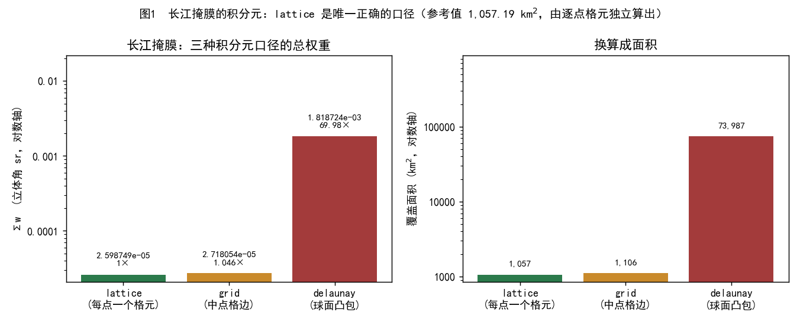
3.2 为什么 grid 在这份数据上偏大 4.59%
掩膜是“有洞的规则格网”：2509 个唯一纬度里有
12 条间隔宽于一步，最宽
0.0691681° ≈ 83 步。
grid 把格边放在相邻现存坐标的中点，于是紧邻空档的点吞掉了空档的一半。
| 统计量 | 值 |
|---|---|
| wgrid/wlattice 最小值 | 0.99886022 |
| 中位数 | 1.00006 |
| p99 | 1.0046899 |
| 最大值 | 5,362.5 |
| std / mean | 13.6 |
| 比值 > 1.1 的点数 | 44 / 142846（0.031%） |
| 比值 > 1.001 的点占比 | 45.422% |
| L=12 重建峰值比（grid/lattice） | 1.044772 |
| L=12 两套重建的图样相关 | 0.986068 |
| 逐阶 RMS 最大相对差 | 4.588% |
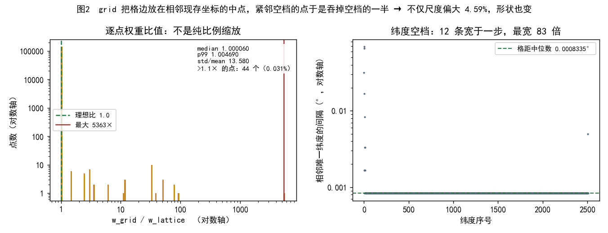
3.3 区域 Voronoi 陷阱
对区域子集做球面 Voronoi 是明确错误的：Voronoi 剖分永远铺满整个球面， 边界点的胞会膨胀到球的对侧，所以 Σw 恒等于 4π。
| 量 | 值 |
|---|---|
| 30° 球冠真实面积 2π(1−cos r) | 0.8418 sr（占全球 6.70%） |
| 区域子集 Voronoi 的 Σw | 12.5664 sr |
| ⇒ 虚高倍数 | 14.93× |
| 同一球冠用 delaunay | 0.7830 sr（0.930×，即偏小 7.0%） |
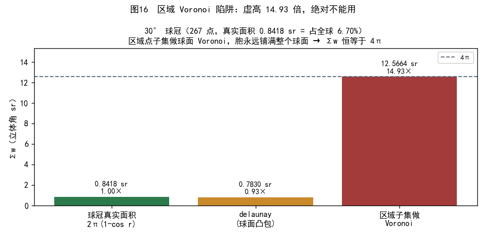
delaunay（不规则散点）或 grid/lattice（格点数据）。若手上有全球点集 + 区域掩膜，正确做法是在全点集上做 Voronoi再取子集。4. 估计方法：目标函数与适用条件
这是全文重点。SHKit 有 5 条估计路径加 2 种正则化、1 个 Slepian 分支。 先说它们之间的关系，因为不理解这一点就会以为“迭代能把误差压小”。
4.1 统一视角：三种停止策略，同一个估计量
设 A 为设计矩阵（N×(L+1)²），W = diag(wi)，定义完备性矩阵
三条路径其实是同一个正规方程 (AᵀWA)x = AᵀWf 的三种停止策略：
| 路径 | 公式 | 等价说法 |
|---|---|---|
quadrature / projection |
x = (1/4π)AᵀWf | 正规方差的第 0 步 |
iterative |
x ← x + (1/4π)AᵀW(f − Ax) | 提前停止的 Richardson/Landweber 迭代 = 隐式正则化 |
wlsq / cg |
x = (AᵀWA)−1AᵀWf | 正规方程的极限解；K 亏秩时 = 最小范数解 |
K ≈ I 时三者数值等价；K 远离 I 时它们分道扬镳，而收敛极限是三者里唯一没有物理依据的 那个。长江案例正是后者。
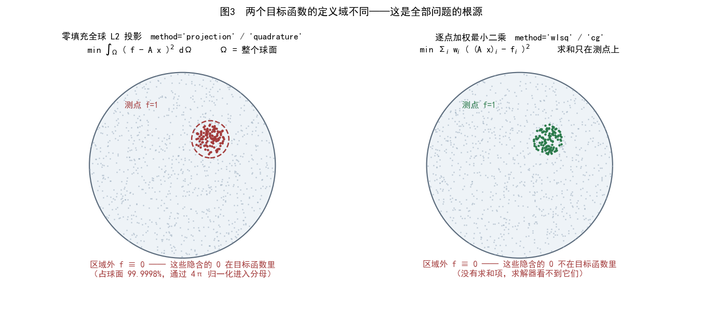
4.2 quadrature / projection：零填充全球 L2 投影
因为区域外 f ≡ 0 对分子无贡献，而分母 4π 是全球归一化，所以这个投影恰好是 零填充场的 L2 投影。它的三条性质：
- 样本残差就是截断泄漏，停在由 L 决定的地板上，永远压不到零；
- C00 精确等于面积占比（几何事实）；
- 不做任何反演，因此没有近零空间放大。
长江 L=12 实测：C00 = 2.0680188857e-06
（几何要求 2.0680188857e-06，比值 1.000000000000），
残差 9.996580e-01，面积加权残差
9.996581e-01。
quadrature 与 projection 在同样的几何权重下逐位相同
（相对差 0.000e+00）——它们本来就是同一件事。
projection）：把 K 特征分解
（特征向量即 Slepian taper，特征值 λ 即集中因子），只对 λ ≥ τ 的方向除以 λ，
其余保持不变。τ = 1 等于纯投影；τ → 0 退化成未正则化 WLSQ。
校正的是采样偏差（可修的离散化误差），从不碰截断泄漏。4.3 iterative：对同一目标做 Richardson 迭代
x ← x + (1/4π)AᵀW(f − Ax)，即对 4.2 的目标做定步长梯度下降，不动点恰好是 WLSQ 解。 准均匀采样下它很划算：本机 Fibonacci 3000 点、L=20 实测
| 方法 | 系数相对误差 |
|---|---|
| quadrature | 6.3443e-04 |
| iterative x1 | 2.7840e-06 |
| iterative x3 | 2.8053e-10 |
| wlsq | 1.0551e-15 |
| projection | 6.3443e-04 |
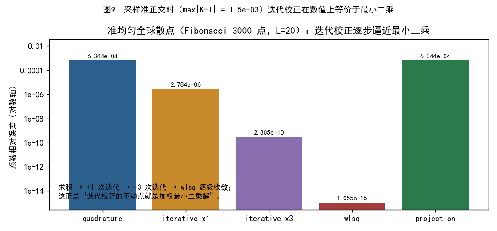
4.4 projection 的 Slepian 视角与 τ 实测
集中比 λ = ∫Rg²dΩ / ∫Ωg²dΩ = cᵀKc / cᵀc，所以 Slepian 函数就是 K 的 特征向量、集中因子就是特征值——不需要任何外部库。
| τ | C00 | C00/几何值 | 被校正方向数 | λmax | 样本残差 |
|---|---|---|---|---|---|
| None（纯投影） | 2.068019e-06 | 1.000000 | — | — | 9.9966e-01 |
| 0.9 | 2.068019e-06 | 1.000000 | — | 0.000342 | 9.9966e-01 |
| 0.5 | 2.068019e-06 | 1.000000 | — | 0.000342 | 9.9966e-01 |
| 0.1 | 2.068019e-06 | 1.000000 | — | 0.000342 | 9.9966e-01 |
| 0.01 | 2.068019e-06 | 1.000000 | — | 0.000342 | 9.9966e-01 |
| 0.0001 | 6.046536e-03 | 2923.829927 | — | 0.000342 | 9.9222e-03 |
| 1e-06 | 6.046651e-03 | 2923.885749 | — | 0.000342 | 9.8997e-03 |
| 1e-08 | 1.221996e-02 | 5909.016147 | — | 0.000342 | 8.4950e-04 |
长江 L=12 的 K 谱：λmax = 3.4198e-04， λmin = -4.239e-20，Σλ = Shannon 数 3.4950e-04。各阈值以上还有几个方向：
| 阈值 | λ ≥ 阈值的个数 |
|---|---|
| λ ≥ 0.01 | 0 |
| λ ≥ 0.0001 | 1 |
| λ ≥ 1e-06 | 2 |
| λ ≥ 1e-08 | 4 |
| λ ≥ 1e-10 | 6 |
| λ ≥ 1e-12 | 8 |
corrected nothing 并说明原因。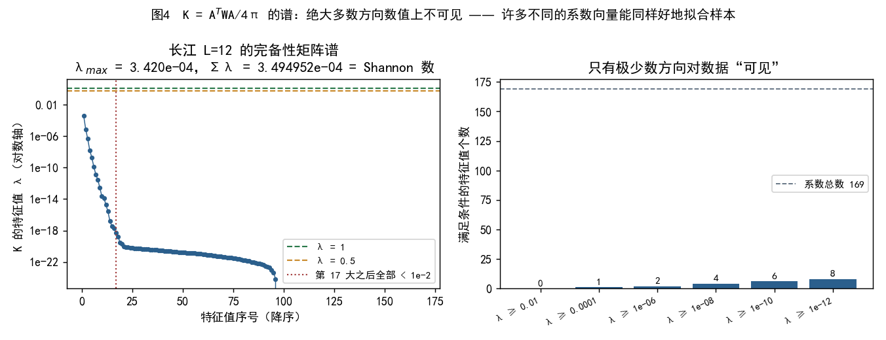
4.5 wlsq / cg：逐点加权最小二乘
两条重要性质，决定了它什么时候会骗你：
- 求和域是测点集：隐含的 0 不在目标函数里，所以它对“掩膜是否被还原”结构性失明。
- 目标函数对 W 的整体缩放不变：φ(cW) 与 φ(W) 极小点相同。而指示场的正确 C00 恰恰正比于 Σw——目标函数扔掉的正是确定 C00 所需的那条信息。
长江 L=12 实测（cg，权重取 lattice，与存储文件的 delaunay 情形对照）：
| 方法 | C00 | C00/几何值 | 隐含 1-set 面积 (km²) | 样本残差 | CG 收敛标志 |
|---|---|---|---|---|---|
projection |
2.0680188857e-06 | 1.000000 | 1,057 | 9.996580e-01 | — |
cg（本轮） |
2.3764302545e-02 | 11,491.3 | 12,148,497 | 7.162e-06 | info = [0]（成功） |
cg_info = [0] 是 scipy 报告"成功收敛"。
它确实收敛了，只是收敛到一个物理上不可能的解——C00 隐含
12,148,497 km²（比中国还大）。"收敛“和”正确“在这里是两件事。
本机把该情形下的告警逐条列出：C00 不一致（触发）＝
True，残差塌陷告警（触发）＝ True。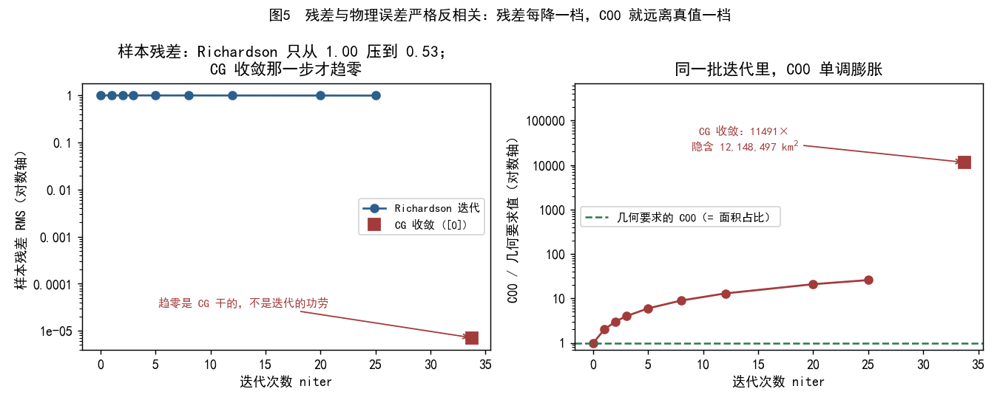
| niter | 样本残差 | C00 | C00/几何值 | 隐含面积 (km²) |
|---|---|---|---|---|
| 0 | 9.996580e-01 | 2.068019e-06 | 1.00× | 1,057 |
| 1 | 9.993162e-01 | 4.135331e-06 | 2.00× | 2,114 |
| 2 | 9.989745e-01 | 6.201935e-06 | 3.00× | 3,170 |
| 3 | 9.986329e-01 | 8.267834e-06 | 4.00× | 4,227 |
| 5 | 9.979500e-01 | 1.239751e-05 | 5.99× | 6,338 |
| 8 | 9.969266e-01 | 1.858673e-05 | 8.99× | 9,502 |
| 12 | 9.955637e-01 | 2.682916e-05 | 12.97× | 13,715 |
| 20 | 9.928434e-01 | 4.328021e-05 | 20.93× | 22,125 |
| 25 | 9.911471e-01 | 5.353929e-05 | 25.89× | 27,370 |
| CG 收敛 | 7.162e-06 | 2.376430e-02 | 11,491.3× | 12,148,497 |
4.6 正则化：tikhonov vs kaula
kaula 的谱先验 sn 由一次快速求积得到的逐阶振幅给出，因此量纲无关 （EWH、重力异常、水高都直接可用）。长江 L=12 实测：
| 正则化 | α | C00 | 隐含面积 (km²) | 样本残差 |
|---|---|---|---|---|
| 无 | — | 2.376430e-02 | 12,148,497 | 7.1619e-06 |
| tikhonov | 1e-08 | 2.376431e-02 | 12,148,498 | 7.1619e-06 |
| tikhonov | 1e-06 | 2.376430e-02 | 12,148,496 | 7.1619e-06 |
| tikhonov | 0.0001 | 2.376161e-02 | 12,147,121 | 7.1626e-06 |
| kaula | 0.0001 | 3.432457e-07 | 175 | 9.7684e-03 |
| kaula | 1e-06 | 3.342623e-06 | 1,709 | 3.8043e-04 |
30° 球冠区域反演（覆盖度 0.062，全球带限真值）的系数相对误差：
| 正则化 | 系数相对误差 |
|---|---|
| 区域求积（quadrature） | 0.896 |
wlsq 未正则化 |
146.4 |
wlsq + tikhonov α=1e-9 |
12.572 |
wlsq + kaula α=1e-4 |
1.282 |
条件数随阶数的增长（同一球冠，未正则化 WLSQ）：
| L | 系数数 | 条件数 |
|---|---|---|
| 2 | 9 | 3.38e+03 |
| 4 | 25 | 1.09e+07 |
| 6 | 49 | 3.51e+10 |
| 8 | 81 | 1.14e+14 |
| 12 | 169 | 5.52e+16 |
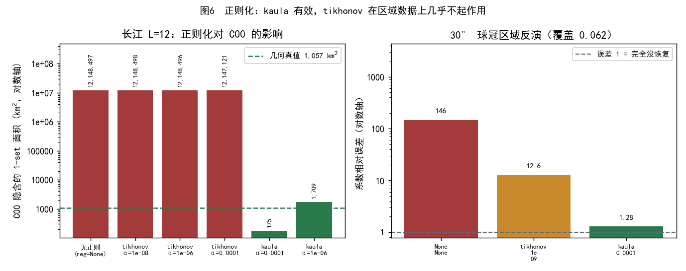
4.7 slepian：区域数据的正解
核心洞察：Slepian 集中矩阵就是 K。在正交归一的 taper 基下，区域加权最小二乘的 正规矩阵是对角的：
本机实测（25° 球冠，186 点，L=20， 覆盖度 0.0424，λ>0.5 共 17 个 taper）：
| 指标 | Slepian（λ>0.5） | 未正则化 WLSQ |
|---|---|---|
| 条件数 | 1.506 | 3.29e+12 |
| ‖C‖（真值 3.43） | 0.3202 | 12.7 |
| 区域外场量 / 区域内 RMS | 4.02e-02 | 8.9 |
| 系数相对误差 | 0.996 | 3.9 |
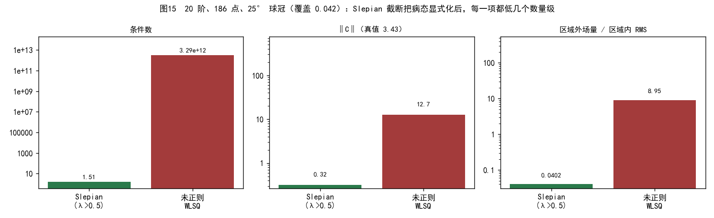
小区域连低阶场都恢复不了
| 球冠半径 | 覆盖度 | Shannon 数(L=4) | λmax | λ>0.5 的个数 |
|---|---|---|---|---|
| 24° | 0.0432 | 1.08 | 0.638 | 1 |
| 15° | 0.0170 | 0.426 | 0.3115 | 0 |
| 8° | 0.0049 | 0.122 | 0.08667 | 0 |
低阶场本身就弥散在全球，其集中因子恰好接近面积占比 A/4π，远低于 0.5；能集中的 taper 都落在高阶。所以用区域数据反演低阶全球场在信息论上不成立，正确做法是 remove–restore：先用全球模型扣掉长波，只在区域内分析残差，最后加回。
4.8 auto 的选路
| 采样 | N | max|K−I| | auto 选择 |
|---|---|---|---|
| DH 网格 90x180（规则） | 16,200 | 2.442e-15 | quadrature |
| GLQ 网格（L=20，用 GLQ 自己的权重） | 861 | 4.996e-15 | wlsq |
| Fibonacci 3000 点 | 3,000 | 1.473e-03 | quadrature |
| 随机均匀 3000 点 | 3,000 | 6.050e-02 | wlsq |
| 聚簇 3000 点（70% 在 35° 帽） | 3,000 | 1.262e-01 | wlsq |
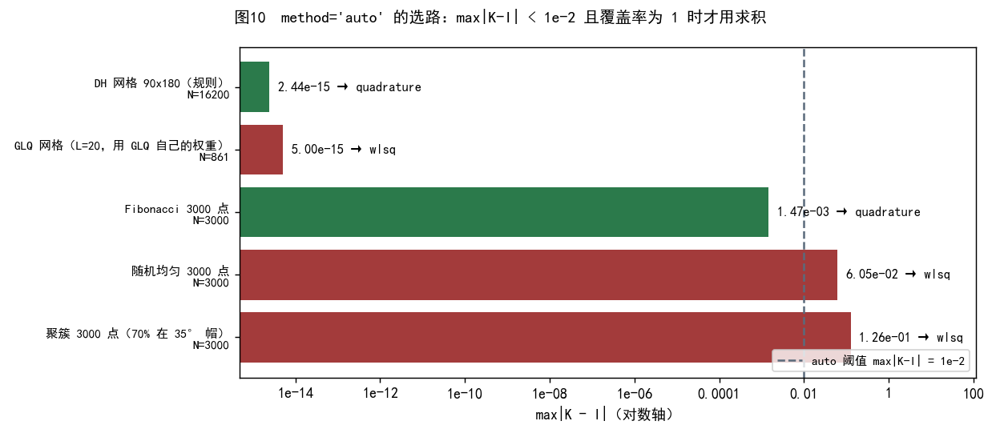
本轮修改后的行为：区域覆盖（覆盖度 < 0.999）→ 路由到
projection，不再升级为 wlsq/cg。原因是区域覆盖下
正规矩阵在双精度下已经奇异（长江实测
-4.24e-20 的最小特征值），升级到最小二乘只会返回近零空间的
最小范数解。
5. 诊断量与守卫
| 诊断量 | 含义 | 判据阈值 | 该采取的动作 |
|---|---|---|---|
max|K−I|（gram_deviation） |
K = AᵀWA/4π 偏离单位阵的最大量；K=I 才是精确求积 | < 1e-2 允许直接求积 | 超标且覆盖全球 → 换 WLSQ + 正则；覆盖区域 → 不要反演 K |
coverage |
Σw/4π，数据覆盖球面的比例 | < 0.999 判为区域数据 | 区域数据按目标 A 走 projection；要目标 B 就正则化 / Slepian / remove-restore |
condition_number |
cond(A√W) | > 1e8 双精度耗尽 | 降阶、提高超定比、或给正则化 |
overdetermination |
N/(L+1)² | < 2 勉强定解；推荐 ≥ 4 | 降 nmax，或增加数据 |
shannon |
(L+1)²·coverage，区域能承载的自由度 | < 0.5·系数数 ⇒ 该区域撑不住这个阶数 | 降阶，或改用 Slepian；记住峰值上界就是这个数 |
lmax_recommended |
当前采样能支持的最大阶数（计数上限） | 覆盖 ≪ 1 时只是计数上限，不是有效约束 | 配合 Shannon 一起看 |
residual_rms_weighted（新增） |
面积加权的残差 RMS——球面上的真 L2 范数 | 与未加权值并列显示 | 两者差别大时说明采样在球面上不均匀（如经纬网格极区过采样） |
| C00 一致性守卫（新增） | C00 必须等于 Σwf/4π（场的全球均值；任何阶截断都保持它） | 相对偏离 > 10% 报警 | 检查积分元与 normalise；改用 projection。小的样本残差不能作为辩护 |
| 残差塌陷告警（新增） | wlsq/cg/iterative + 覆盖度 < 0.999 + 相对残差 < 1e-3 | 三者同时满足即报警 | 说明求解器利用了近零空间，不是拟合得好；与 projection 对照并检查 C00 |
5.1 未加权残差不是球面上的 L2 范数
经纬网格在极区过采样，而那里 f 与重建都 ≈0，会把未加权 RMS 稀释。全局 0/1 帽实测：
| L=12 帽 | 值 |
|---|---|
| 未加权残差 RMS | 6.003356e-02 |
| 面积加权残差 RMS | 6.815486e-02 |
| 比值 | 1.1353 |
几何/区域数据上两者一致（因为权重本身近似均匀），但全球网格数据上必须看面积加权值。
5.2 C00 守卫能力与边界
它抓的是DC 不一致，不是积分元选错。实测两种情形：
| 情形 | C00 | 自身 Σw/4π | 比值 | 守卫 |
|---|---|---|---|---|
存储的 yantze_shkit_coeffs.gfc（当前内容：projection + delaunay） |
1.4472943080e-04 | 1.4472943080e-04 | 1.000000 | 不触发 |
原始 .gfc（cg + reg=None + delaunay，本机复现） |
2.3814443053e-02 | 1.4472943080e-04 | 164.5× | 触发 |
当前文件是自洽的（C00 精确等于它自己权重的 Σw/4π），所以守卫不响——
但它用的 delaunay 口径把面积放大了 70.0 倍。
守卫能抓“求解器跑偏”，抓不了“口径选错”；后者要靠
rule='auto' 的格点识别与 3.1 的对照表。
6. 算法与实现
| 环节 | 实现要点 | 复杂度 / 内存 |
|---|---|---|
| 流式 m 阶求积 | 沿阶 m 逐列推进，只保留当前与 m−2 列，不构造 N×N 中间量 | O(N·(L+1)²) 时间，O(N·L) 内存 |
矩阵无关 CG（SHOperator） |
matvec/rmatvec 现场构造，设计矩阵从不落地 | O(N) 内存（对比稠密 O(N·ncoef)） |
| K 的特征分解 = Slepian | 集中矩阵就是 K，特征向量即 taper，不需要外部库 | O(ncoef³)，ncoef > 1500 时跳过 |
| Kaula 谱先验 | 由一次快速求积得到逐阶振幅 sn，量纲无关 | 额外一次求积 |
| L 曲线自动选 α | 变量替换 y = Rx 后一次特征分解扫描整条 L 曲线 | O(ncoef³)；ncoef > 2500 时跳过并提示显式给 α |
| 完备性检查开销 | N·ncoef² > 2e9 flops 时降级为廉价的 m=0 对角完备性 | O(N·L) |
| 单位正/反变换 | 正变换 Cnm = anm/fu（改它导出的系数就变）；反变换 ft 只影响重建 | 常数级 |
| 多时次 | 各时次独立求解，共享设计矩阵/算子 | 线性于 ntime |
本机在长江数据上实测的耗时（L=12，142846 点）：求积/投影 ~2 s， 6 组正则化 CG 共 ~110 s，τ 扫描 8 组 ~10 s，CG 单次 ~6 s；阶数扫描 L=12/30/60/120 分别 0.9, 4.6, 16.7, 65.1 s。 L=120 以上直接求和的代价迅速上升（README 记录 L=700 需 40+ 分钟）， 更高阶必须换 Slepian / FFT / 局部方法。
7. 试验一：示例数据（全球准均匀散点，真值已知）
数据：GUI「生成示例数据」= 全球 Fibonacci 2,500 点
（main_window.make_demo()：n, L = 2500, 12），
真实场带限 12 阶 + 1% 噪声；sample_data/ 另提供 3000 点、
区域球冠、以及 20 阶真值系数（truth_coeffs_20.sh）。
真值已知时可以直接量系数误差，因此这是验证估计量行为的最佳场景。
| 项目 | 值 |
|---|---|
| 点数 | 2,500（Fibonacci 球面） |
| 真值 | 带限 12 阶 + 1% 噪声 |
| GUI 自动选的积分元 | voronoi |
| GUI 跑出的方法 | iterative |
| 警告条数 | 1 |
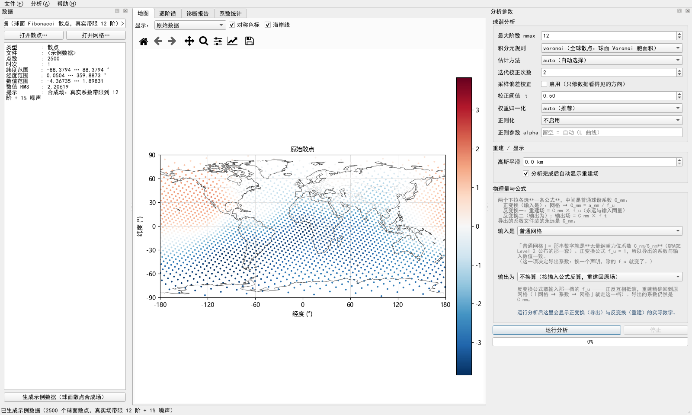
projection 方法与 lattice 积分元选项。此前的 tests/_gui_shots/*.png 因离屏运行缺字体，所有中文都是豆腐块，已弃用。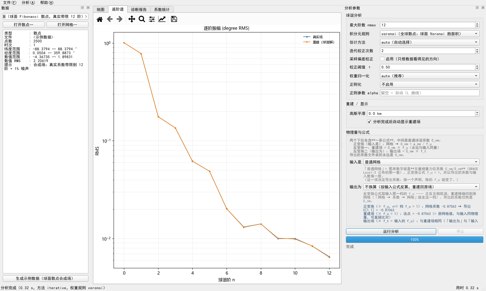
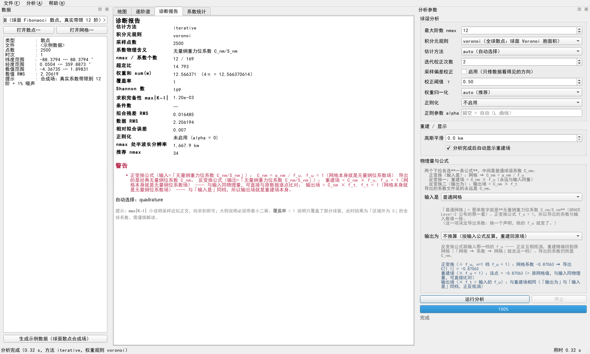
max|K−I|、拟合残差与面积加权残差、C00 与数据加权均值之比、以及逐条警告。说明什么：报告里现在同时给出两个残差范数与 C00 一致性，这正是判断“求解器有没有跑偏”的最小信息集。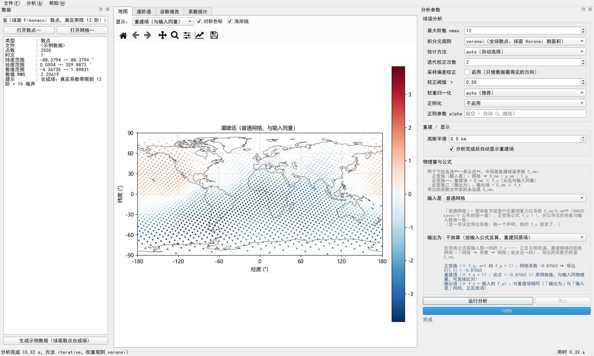
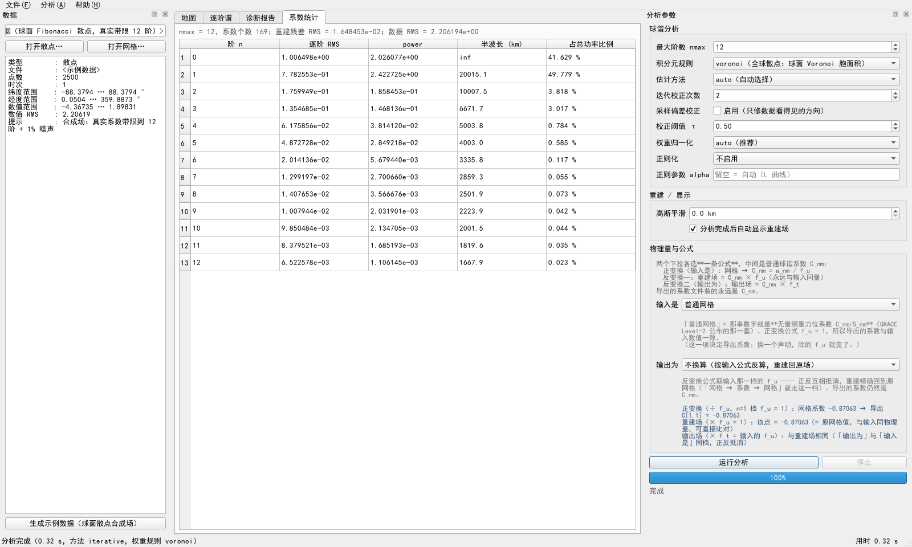
7.1 噪声行为：阶数比估计量重要
真值带限 40 阶、求解 20 阶、 3000 点，加高斯噪声：
| 相对噪声 σ | quadrature | iterative | wlsq | 理论 (L+1)/√N·σ |
|---|---|---|---|---|
| 0 | 2.2020e-02 | 2.2001e-02 | 2.2001e-02 | 0.0000e+00 |
| 0.01 | 2.2332e-02 | 2.2319e-02 | 2.2319e-02 | 3.8341e-03 |
| 0.05 | 2.8919e-02 | 2.8924e-02 | 2.8924e-02 | 1.9170e-02 |
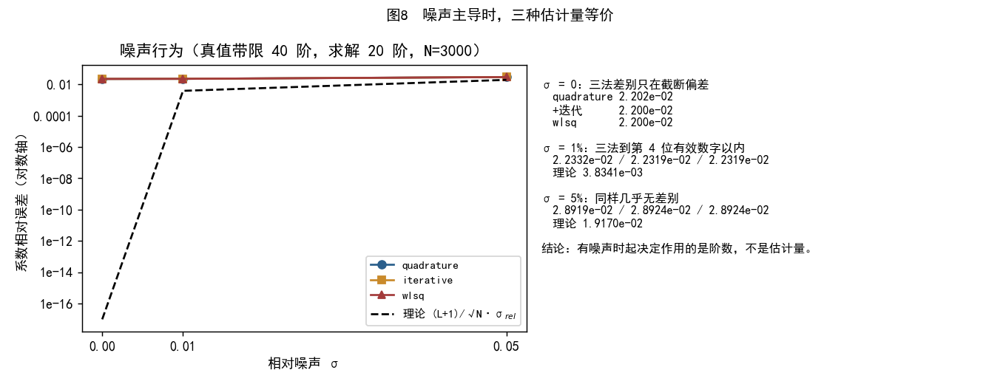
8. 试验二：全球 0/1 帽（良态对照）
构造：全球 0.5° 网格（259,200 点），20° 半径的 0/1 帽，
dh 权重（Σw = 12.566370614359 = 4π，覆盖率
1.000000），帽面积占比 0.030182。
这是良态对照：样本残差是真实全球误差的离散化，可以放心用它做判据。
| L | 系数数 | 求积残差 | +3 次迭代 | +25 次迭代 | 面积加权相对截断误差 |
|---|---|---|---|---|---|
| 2 | 9 | 0.13426923 | 0.13426923 | 0.13426923 | 0.871399 |
| 4 | 25 | 0.10726011 | 0.10726011 | 0.10726011 | 0.686968 |
| 8 | 81 | 0.06364929 | 0.06364929 | 0.06364929 | 0.413719 |
| 12 | 169 | 0.06003356 | 0.06003356 | 0.06003356 | 0.392304 |
| 20 | 441 | 0.04540591 | 0.04540591 | 0.04540591 | 0.298274 |
| 40 | 1681 | 0.03256707 | 0.03256707 | 0.03256707 | 0.213264 |
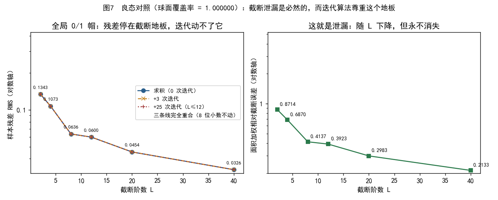
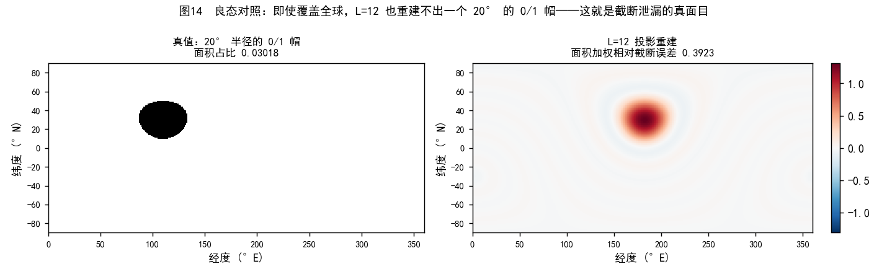
9. 试验三：长江散点掩膜（重点案例）
9.1 数据
| 项目 | 值 |
|---|---|
| 点数 | 142,846 |
| 经度范围 | 106.0275 .. 111.0992 °E（跨度 5.0717°） |
| 纬度范围 | 29.0325 .. 31.3225 °N（跨度 2.2900°） |
| value | min = max = 1.0，std = 0.0（只有一个取值） |
| 唯一纬度 / 唯一经度 | 2,509 / 5,816 |
| 格距 | 0.00083160° × 0.00083350° ≈ 92.5 m × 92.7 m |
| 外接矩形面积 | 123,726 km²（掩膜只占其中极小部分） |
rule='auto' 判定 |
lattice（识别为规则格点上的子集） |
Yangtze_River.txt 列出的是取值为 1 的点；
文件里没有 0 值行。所以这份数据的物理含义是区域指示函数（区域内 = 1、区域外 = 0），
而不是“一个常数场”。指示场的信息全在边界上，这是它的高频内容。
（原始数据 Yangtze_River.mat 只有坐标、没有数值场，
对应作者 cal_kernalSH.m / scatter2SHs.m 里的 input_mask。）9.2 C00 是几何事实
对 0/1 场，C00 = 为 1 的面积占全球的比例。三套积分元给出三套答案：
| 口径 | Σw (sr) | 面积 (km²) | C00 | 相对 lattice | 与自身 Σw/4π 自洽？ |
|---|---|---|---|---|---|
lattice |
2.598749175508e-05 | 1,057.19 | 2.0680188857e-06 | 1.000000× | 是 |
grid |
2.718054234939e-05 | 1,105.72 | 2.1629588354e-06 | 1.045909× | 是 |
delaunay |
1.818723666251e-03 | 73,986.81 | 1.4472943080e-04 | 69.98× | 是 |
| 逐点格元参考（CSV） | 2.598749175508e-05 | 1,057.19 | 2.0680188857e-06 | 0.999999999999998× | 是 |
四个都“自洽”（C00 都等于各自的 Σw/4π），但只有 lattice 与逐点格元参考
一致。所以自洽性检查抓不到口径错误。
9.3 逐阶谱与泄漏
| n | 逐阶 RMS（projection） | 功率占比 |
|---|---|---|
| 0 | 1.462310e-06 | 0.605% |
| 1 | 1.790489e-06 | 1.813% |
| 2 | 1.886355e-06 | 3.019% |
| 3 | 1.931424e-06 | 4.220% |
| 4 | 1.956775e-06 | 5.415% |
| 5 | 1.972234e-06 | 6.601% |
| 6 | 1.981893e-06 | 7.776% |
| 7 | 1.987766e-06 | 8.940% |
| 8 | 1.990958e-06 | 10.090% |
| 9 | 1.992129e-06 | 11.224% |
| 10 | 1.991698e-06 | 12.341% |
| 11 | 1.989945e-06 | 13.439% |
| 12 | 1.987066e-06 | 14.517% |
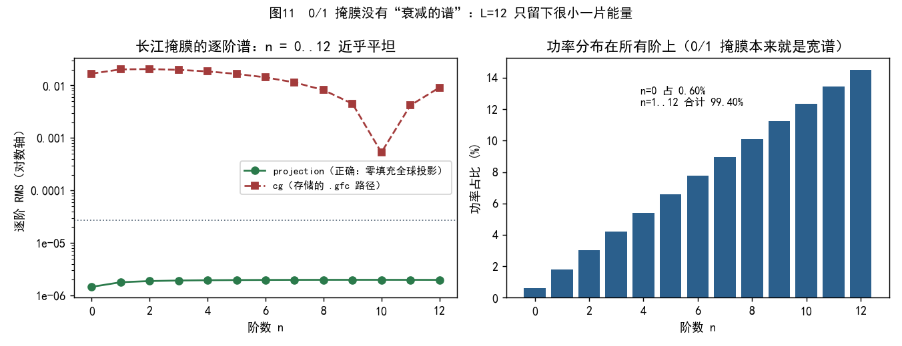
| L=12 的关键量 | 值 |
|---|---|
| Shannon 数 (L+1)²·Σw/4π | 3.4950e-04 |
| 实测重建峰值 | 3.4555e-04 |
| 峰值 / Shannon 数 | 0.9887 |
| 掩膜要“立”到 1 所需 L | ≈ 694.4 |
| 半波长 @L=12 | 1,670 km |
| 区域尺度 | 488 km × 255 km |
| 样本残差（= 泄漏） | 9.996580e-01 |
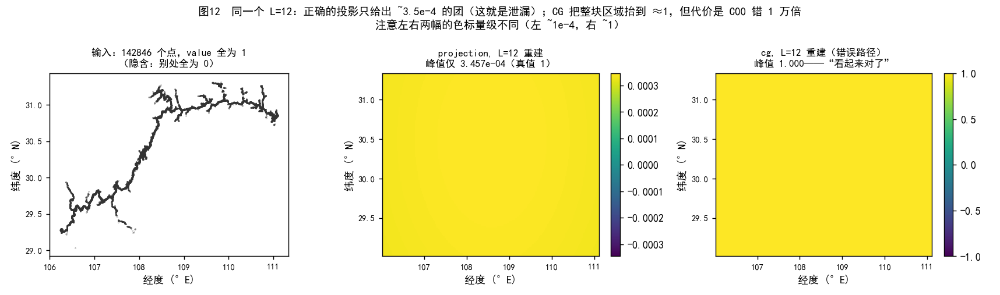
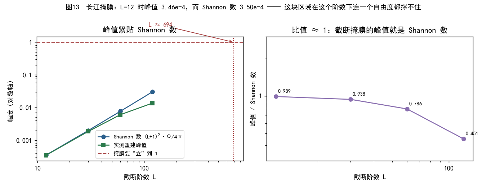
| L | Shannon 数 | 实测峰值 | 峰值/Shannon | 半波长 (km) | 样本残差 | 用时 (s) |
|---|---|---|---|---|---|---|
| 12 | 3.4950e-04 | 3.4555e-04 | 0.9887 | 1,670 | 9.9966e-01 | 0.9 |
| 30 | 1.9874e-03 | 1.8636e-03 | 0.9377 | 668 | 9.9824e-01 | 4.6 |
| 60 | 7.6951e-03 | 6.0447e-03 | 0.7855 | 334 | 9.9494e-01 | 16.7 |
| 120 | 3.0278e-02 | 1.3661e-02 | 0.4512 | 167 | 9.8943e-01 | 65.1 |
9.4 迭代把残差压到零，同时把 C00 推离真值
见 4.5 的表与图5。核心结论：残差与物理误差严格反相关。
9.5 存储文件的两种状态
SHKit/yantze_shkit_coeffs.gfc
在本轮工作期间已被重新生成（mtime 2026-09-12 17:55:55），
当前内容是 method=projection + weight_rule=delaunay，
不再是原始的 CG 解。因此下面两行分别给出：| 状态 | method | 积分元 | C00 | 相对 lattice 几何值 | 样本残差 | 触发 C00 守卫？ |
|---|---|---|---|---|---|---|
| 当前文件（读取原文件） | projection | delaunay |
1.4472943080e-04 | 69.98× | — | 不触发（与自身 Σw/4π 比值 1.000000） |
| 原始文件（本机用同配置复现） | cg | delaunay |
2.3814443053e-02 | 11,515.6× | 7.307e-06 | 触发（True） |
复现原始文件的方式（命令行）：
shkit analyze --points Yangtze_River.txt --nmax 12 --method cg --rule delaunay
得到 C00 = 2.38144430534445797e-02、样本残差 = 7.3066721933582713e-06、
cg_info = [0]，与原始文件内容逐位一致。
它错在同时踩了三个已记录在案的坑：method=cg（未正则化最小二乘）、
reg=None、rule=delaunay（凸包面积）。
而 docs/方案调研.md 自己就测出“区域未正则化 WLSQ 不可用
（30° 球冠系数相对误差 74×）”——本机在同一配置下复现到
146.4，条件数 5.52e+16。
9.6 GUI 对照：两种方法跑同一份数据
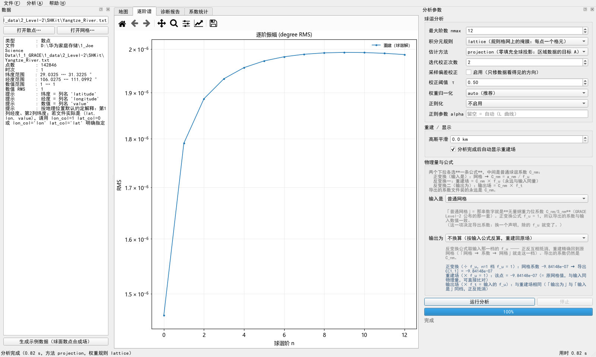
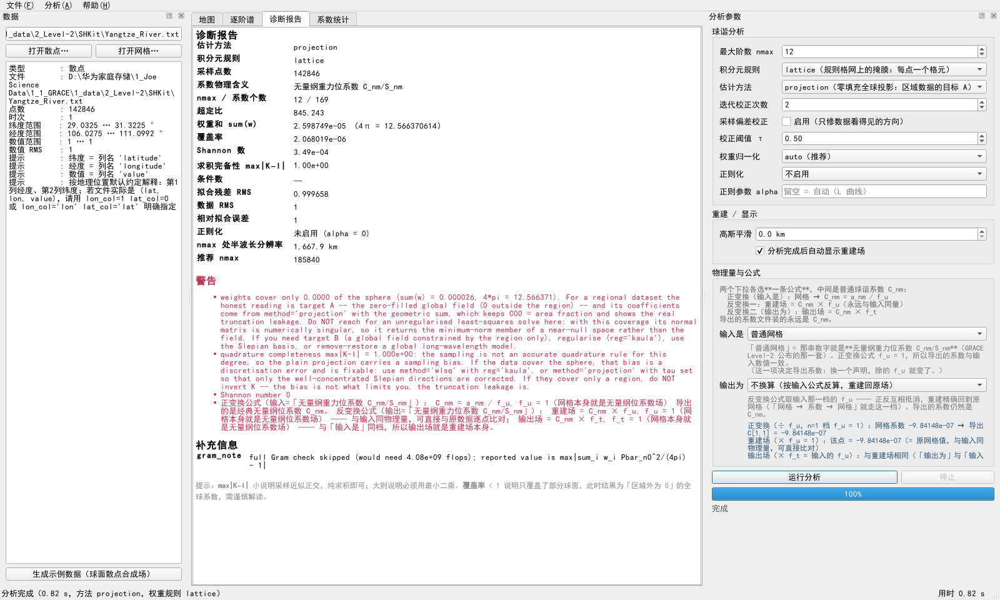
warn_c00 = False），说明这个解与数据的加权均值自洽。残差接近 1 是正常且诚实的：它就是截断泄漏。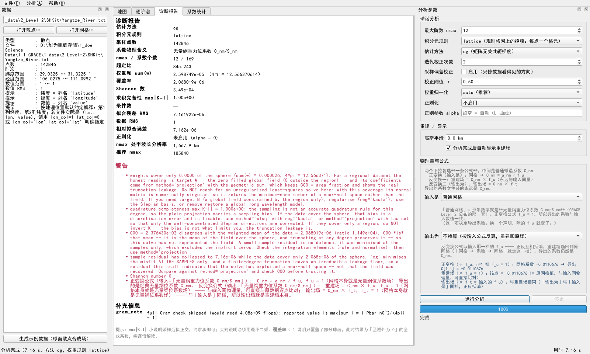
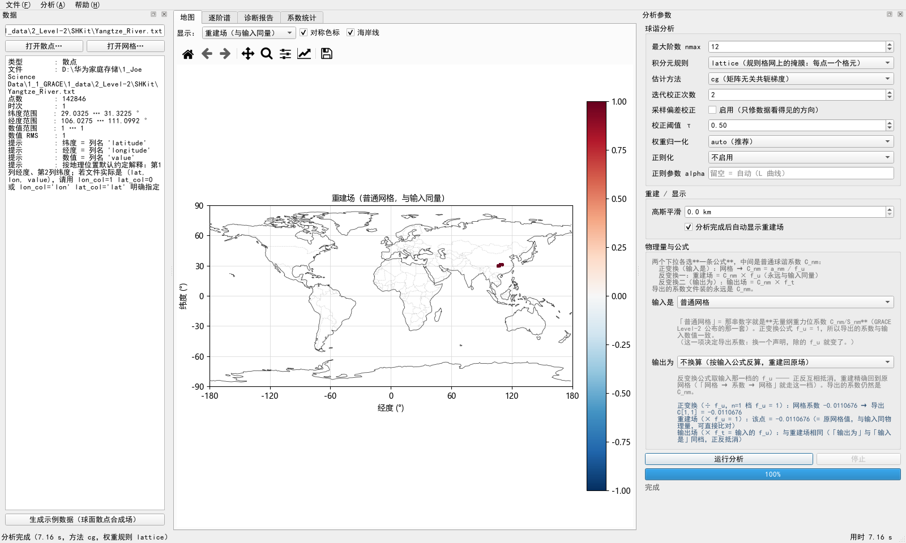
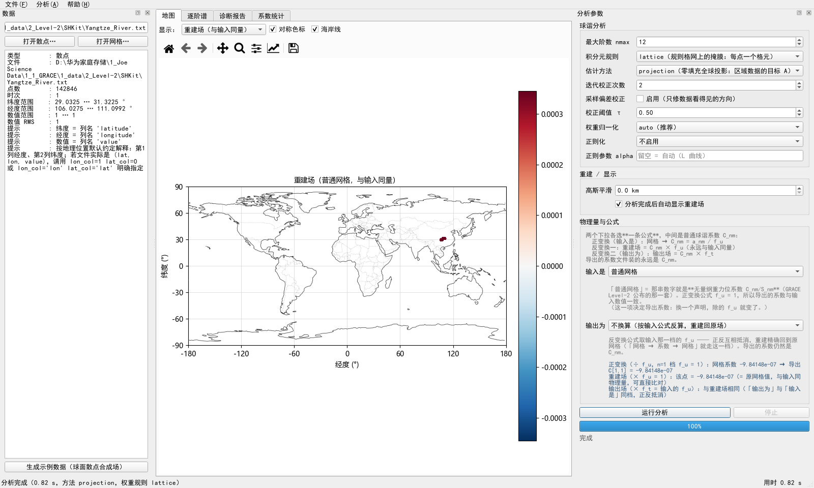
10. 方法选择速查表
| 你的情况 | 推荐方法 | 积分元规则 | 不该用什么 | 理由（实测） |
|---|---|---|---|---|
| 全球规则网格 | quadrature（auto 会自动选） |
dh |
— | max|K−I| = 2.44e-15，求积即精确投影 |
| 全球准均匀散点 | quadrature，想更准加 1–3 次迭代 |
voronoi |
把 niter 开到收敛 | max|K−I| = 1.47e-03；迭代实测 6.344e-04 → 2.805e-10 |
| 全球但采样很不规则 | wlsq + reg='kaula' |
voronoi |
无正则化的 wlsq/cg | max|K−I| = 6.05e-02 / 1.26e-01，需最小二乘 |
| 区域网格（完整矩形） | projection 或 slepian |
grid |
区域 Voronoi | Voronoi 虚高 14.93 倍 |
| 区域散点（不规则） | projection；要目标 B 用 slepian |
delaunay |
区域 Voronoi；未正则化 wlsq | delaunay 覆盖度偏小 7.0%（可接受） |
| 规则格网上的掩膜 | projection（auto 已自动路由） |
lattice |
grid（偏大 4.59%）、delaunay（偏大 70 倍） |
只有 lattice 与逐点格元参考一致（相对差 2e-15） |
| 0/1 指示场，想看泄漏 | projection（τ 留空） |
lattice/dh |
任何把样本残差压到 0 的方法 | 投影的残差就是泄漏；迭代会把它变成假象 |
| 要区域反演低阶全球场 | remove–restore；或 slepian |
delaunay/grid |
直接用区域数据反演 | 小区域 λmax 仅 0.638（<0.5），信息论上不成立 |
11. 优缺点与适用场景汇总
quadrature / projection（零填充全球投影）
优点：目标函数定义在整个球面上，因此样本残差就是截断泄漏；C00 精确 等于面积占比；不做反演，没有近零空间放大；计算最便宜。
缺点/边界：不能修采样偏差（需靠 τ 或换权重规则）；不给出“区域内最优拟合”， 所以区域内的拟合看起来“很差”——但那是真的。
什么时候会骗你：几乎不会骗；它的问题是被误读——把 0.99 的残差当成“方法失败”。 真正的失败是换个方法把残差压到 1e-6。
iterative（Richardson 校正）
优点：准均匀采样下极便宜地逼近最小二乘（实测 6.344e-04 → 2.784e-06）。
缺点/边界：niter 必须小；不动点是 WLSQ 解，所以在 K 远离 I 的数据上 它会一路上滑到错误解。
什么时候会骗你：区域数据上它每一步都在降残差，看起来在改进， 而 C00 同时单调膨胀（niter 0→25 从 1.0× 到 25.9×）。
wlsq / cg（逐点加权最小二乘）
优点：全球覆盖但采样不规则时的正解；配合超定比 ≥ 4 与正则化很稳。
缺点/边界：目标函数求和域只有测点，对“隐含 0"结构性失明；对 W 整体缩放不变， 因此原则上无法约束 C00。
什么时候会骗你：区域数据上未正则化时——cg_info=0（报告成功收敛）、
残差 7.3e-06、而 C00 错 11,516 倍。
它不会报错，只会给一个自洽但物理上不可能的解。
reg='tikhonov'
优点：实现简单，先验明确（最小范数）。
缺点：在零空间极大的区域问题上几乎不起作用——长江上 α 到 1e-4 仍停在 2.376e-02； 30° 球冠上加 α=1e-9 后系数相对误差仍 12.572。
reg='kaula'
优点：量纲无关（谱先验由数据自估），对区域数据有效：长江 C00 拉回 3.432e-07（隐含 175 km²）。
缺点/边界：先验本身取自一次求积的逐阶振幅，覆盖不全或有噪声时先验会被污染； α 仍需人工判断。
slepian
优点：区域数据的正解——把病态显式化（λ 就是集中因子）， 条件数与区域外场量都低几个数量级（1.51 / 4.02e-02 vs 3.29e+12 / 8.9）。
缺点/边界：区域内拟合“一般”（它放弃了不可确定的方向）； 小区域连低阶场都恢复不了，必须 remove–restore。
积分元规则
lattice：格点数据上唯一正确；grid 只在完整网格上正确；
delaunay 拿凸包面积，对河网状掩膜虚高 ~70 倍；
voronoi 对任何区域子集都绝对错误（恒为 4π）。
12. 复现
12.1 本文档的全部数值与图
cd SHKit python docs/_summary_measure.py # 计算全部数值 -> _measurements.json / _data.npz python docs/_summary_history.py # 字体检查 + .gfc 两种状态 python docs/_summary_figs.py # 16 张图 -> SHKit方法总结_figs/ python docs/_summary_shots.py # 10 张 GUI 截图（离屏 Qt + SimHei） python docs/_summary_html.py # 生成本文件
12.2 关键结论对应的命令
# 长江掩膜：正确路径（auto 会选 lattice + projection；C00 = 2.068e-06） shkit analyze --points Yangtze_River.txt --nmax 12 --method projection # 长江掩膜：错误路径（复现原始 .gfc 的内容） shkit analyze --points Yangtze_River.txt --nmax 12 --method cg --rule delaunay # 原始工具链（逐点格元权重，写 examples/） python tools/yangtze_points_to_sh.py --lmax 60 # 新回归套件（28 项，含与逐点格元参考 CSV 的交叉校验） python tests/validate_projection.py python tests/run_all.py
12.3 仓库产物
| 文件 | 内容 |
|---|---|
docs/SHKit方法总结.html |
本文档 |
docs/SHKit方法总结_figs/ |
16 张方法/试验图 + 10 张 GUI 截图 + 测量 JSON（本目录当前共 27 个 PNG） |
docs/方案调研.md |
方法调研原始记录（含区域 WLSQ 失效、Slepian 实测等） |
examples/README_yangtze.md |
长江数据说明 + 三种积分元口径对照表 |
tools/yangtze_points_to_sh.py |
长江散点 → 球谐系数（逐点格元权重） |
examples/yangtze_mask_n60.sh / .npz |
该工具产出的 nmax=60 掩膜系数 |
examples/yangtze_points_weights.csv |
142846 行逐点积分元（本文档的参考基准） |
tests/validate_projection.py |
零填充全球投影 + C00 守卫的回归套件（28 项） |
13. 已知限制
- 命名问题（未改）：新规则名
lattice与shkit/cli.py里已有的 "Fibonacci lattice"（指全球准均匀点列，fib_sphere()的 docstring）撞名，且与grid在英文里近乎同义。 二者靠名字本身区分不出“完整 vs 有洞”。候选改名subgrid（与grid的关系一目了然，不引入新术语）。本轮未改，以免动到已发布的规则名。 SHCoeffs.degree_rms()在 n=0 处偏小 √2 倍（既有行为，未改）： 它对 n=0 也是mean([C00², S00²])，而 S00 结构上恒为 0， 所以返回的是 |C00|/√2。本文档 9.3 的逐阶谱表沿用该既有行为 （n=0 行 = 1.462310e-06，而 C00 = 2.068019e-06， 比值为 0.707107 ≈ 1/√2）。 其余各阶不受影响。修它会改变所有导出谱与既有测试基线，故未在本次范围内改动。- C00 守卫抓不到口径错误：它检查的是求解器产出的 C00 与 Σwf/4π 是否一致。若积分元本身选错（如 delaunay 凸包面积），解仍然自洽， 守卫不响。9.2 的表就是这种情形（四套口径全部“自洽”）。
- τ 校正需要构造 K：
projection(tau=...)需要完整设计矩阵， 内存约 O(N·ncoef)；长江（142846 × 169）约 193 MB，可接受，但更大的问题要小心。 - 读取
.gfc的头部元数据不落到coeffs.meta顶层： 方法/积分元等写在meta['gfc_header']里（键值为字符串）， 需要c.meta['gfc_header']['method']才能取到。 本文档 9.5 即按此读取。 - netCDF 无法在本机共享盘上写入：
netCDF4在华为家庭存储（SMB）上对任何路径to_netcdf()都报PermissionError；本机临时目录正常。因此tests/run_all.py中 3 项.nc相关检查失败 （grid nc round trip、synth写recon.nc、glq-grid写glq.nc），与本轮改动无关。.grd/.csv往返均通过。故本文档所有产物只用 PNG/CSV/JSON。 - 区域低阶反演在信息论上不成立：这不是软件限制而是数学事实 （4.7 的小球冠表）。任何声称“用区域数据反演出低阶全球场”的结果都需要先做 remove–restore，否则不可信。
- 本轮未覆盖：FFT/局部球谐等更快的高阶路径；多时次数据上的 C00 守卫
只对第 0 个时次给出标量判定（其余时次在
meta['dc_mean_expected_all']里）。